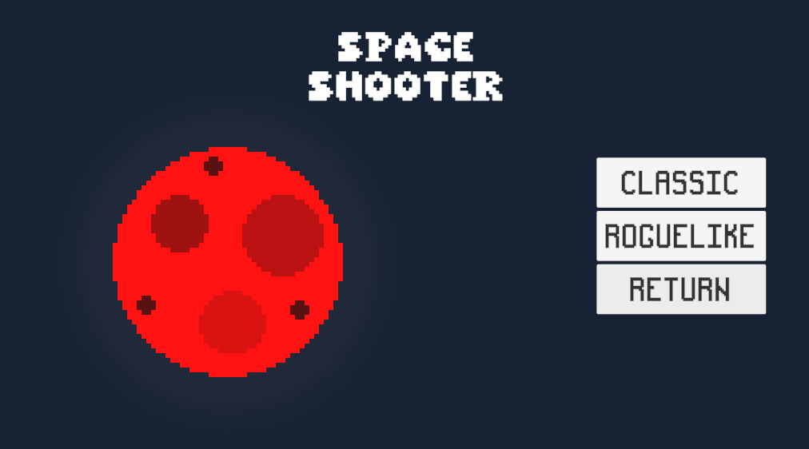
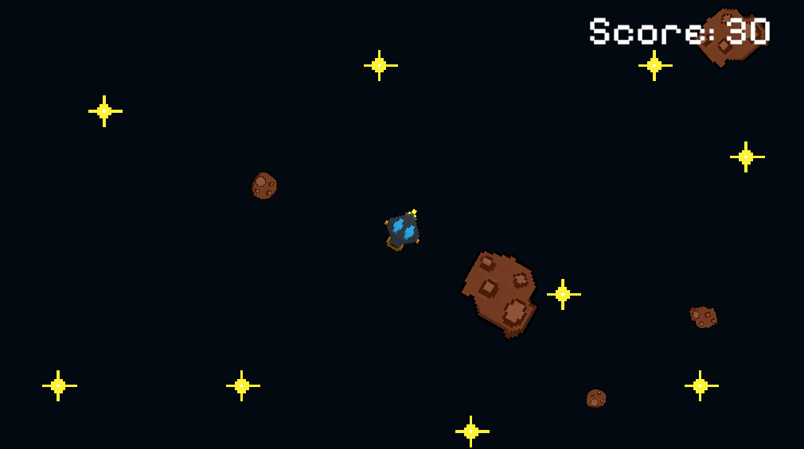
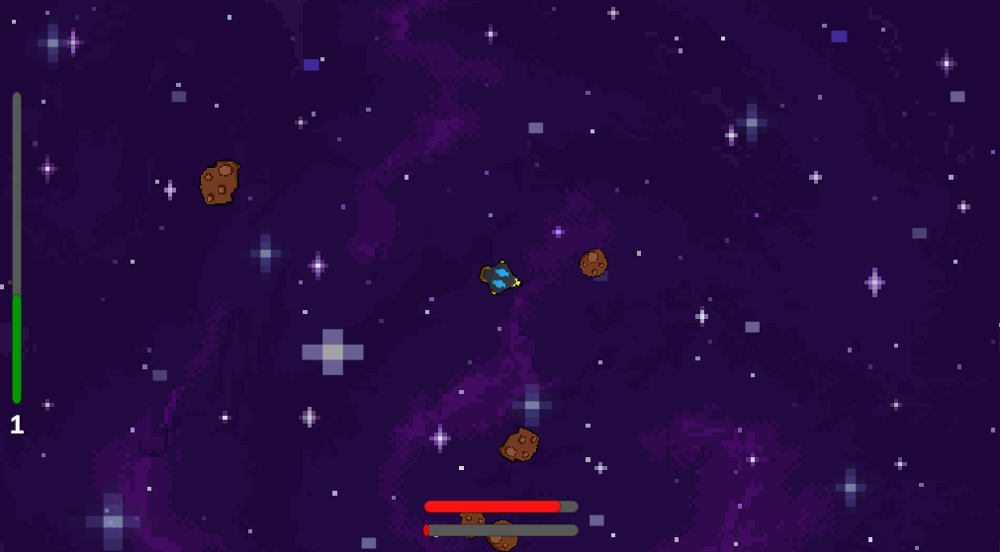

"Space Shooter" é um jogo de tiro 2D desenvolvido em Unity, com visão top-down. O jogo conta com 2 modos de jogo: Clássico e Roguelike.
No modo Clássico, o jogador fica parado apenas atirando contra os asteroides inimigos enquanto coleta Power Ups para ajudá-lo. Cada asteroide derrotado concede pontos e no fim o jogador recebe uma pontuação final.
No modo Roguelike, o jogador vai derrotando os inimigos e acumulando pontos de experiência para aprimorar sua nave. O mapa é gerado proceduralmente a cada partida com planetas em que o jogador deve evitar sua órbita.